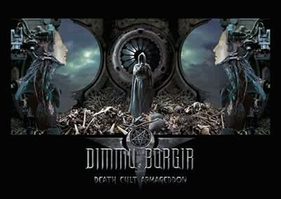

Forums galactiques > Assemblée Galactique : diplomatie officielle > Proposition de loi des diplomates
Pour | 79 | |
Contre | 13 | |
Blanc | 11 | |
Total : 103 vote(s) | ||
| Arthérius Respect diplomatique : 1559  10/05 ETU 19:06 | Score : 0 Détails Sans vouloir jeter de l'huile sur le feu, je dis que toute personne s'attaquant à harkonnen s'attaque à moi ...
J'ai été relativement au second plan lors des attaques d'utopia en ce qui concerne la prise de mes systèmes ( 0 BHA utilisées , que de l'ionique) , mais l'attaque d'un diplomate risque de me faire changer d'humeur , et celle d'un ami encore plus ... Pour résumer , en Utopien ca se dirait " Tu touches tu l'payes ..." | ||
| Cesco Imperator Respect diplomatique : 3122  10/05 ETU 19:16  | Score : 4 Détails En quoi est-ce qu'on a instauré une dictature ? Pensez-vous vraiment que les commandants qui ont voté de façon écrasante pour notre texte sont des idiots ?
Et aussi que le Baron et moi sommes de mèche pour prendre le pouvoir ? je vous rappelle que ma coalition, La Triade, avait conquis le 0 et a restitué Ambassade aux élus. Si on avait voulu le pouvoir, soyez en sur, on l'aurait déjà pris ! Vous nous fustigez parce qu'on ne sert à rien, d'après vous, et quend on propose des textes qui nous donnent des moyens d'action EN CAS DE CRISE, nous sommes des dictateurs ?! Et qui tire sur tout ce qui bouge et rend les planètes après ? nous?! Soyons sérieux deux minutes ! Vladimir Harkonnen est élu à chaque élection où il se présente, nous détenons déjà le 0, et on se compliquerait la vie pour obtenir les pleins pouvoirs ?! La désinformation a ses limites, celles de l'intelligence des gens auxquels on s'adresse.. | ||
| Sullïwan Respect diplomatique : 1097  10/05 ETU 19:22 | Score : 1 Détails Je ne parle pas de vous, je cherche juste à comprendre le pouvoir de cette loi.
Ce n'est pas parce qu'on a confiance en les dirigeants actuels qu'il faut voter n'importe quoi... Pourquoi chercher à tuer le débat ? | ||
| Dr.Machiavel Respect diplomatique : 651  10/05 ETU 19:29 | Score : 3 Détails Vladimir Harkonnen,
Vous avez eu le soutien d'Utopia au éléction, et même se qui pourrais semblée bizare aux espérantiste lors de votre projet de loi, Je sais se que vous voulez en faire, et je l'aprouverais... Cependant Harkonnen je vous pris ne m'insultez pas, Utopia n'est pas suffisament suicidaire pour s'attaquer a vous, et d'ailleurs n'allez vous pas recevoir dédomagement? Ne vous avons pris aucune planete? Au contraire et j'approuve que nos messages ont oeuvré pour Espérance et non contre... | ||
| Cesco Imperator Respect diplomatique : 3122 10/05 ETU 19:37 | Score : 6 Détails Cette loi permet, comme toutes les lois de ce genre, d'assurer la continuité du pouvoir politique en cas de danger pour l'institution politique.
Notre mission première est de régler les conflits par voie diplomatique. Mais nous avons été élu pour d'autres choses, les Réformes. Etant donné que cette mission là est de proposer un système politique viable, permettant réellement la paix sur Esperance, et que des conflits éclatent constamment, ce qui rend difficile la création législative, le sentiment que les diplomates ne servent à rien s'accentue. Au moins, maintenant, si les combats trop présents partout dans Esperance rendent impossibles le travail diplomatique, ceux-ci bénéficieront quand même de la possibilité de montrer leur travail, c'est tout. Sans renvoyer les gens aux urnes quand ils ont autre chose à faire, se défendre, par exemple... | ||
| Nikopol Respect diplomatique : 199  13/05 ETU 21:20 | Score : 5 Détails <début de transmission V23.X7854.AD2>
Chers Sires, Après avoir lu une grande partie du débat, une question m'est venue à l'esprit directement :"Comment définir de façon précise un état d'urgence". Il ne me semble pas que vous ayez donné une définition complète de ce qui est quand même le déclanchement d'une situation où les Commandants abandonnent une partie de leur pouvoir à une minorité. Je souhaiterai que vous m'éclairiez sur ce point et si une définition a été déjà été donnée et qu'elle vous parait amplement suffisante veuillez m'excuser pour le dérangement occasioné par ma transmission. Respectueusement et avec tous les voeux de Justice et d'Honneur. Seigneur Ecclesiaste Nikopol <fin de transmission V23.X7854.AD2> | ||
| Wolverine Respect diplomatique : 2271  13/05 ETU 22:20 | Score : 0 Détails Comme son nom ne l'indique pas, un état d'urgence a été décrit par le Baron : c'est la mise en danger de la Liberté et des institutions de la Galaxie.
Si vous souhaitez faire une liste précise, je vous préviens que c'est le travail de toute une vie. Bon courage. | ||
| Jormungand Respect diplomatique : 5  13/05 ETU 22:26 | Score : 0 Détails On peut dire qu'on a dû leur arracher cette loi!Ils se sont enfin décidés à faire quelque chose,quoi que ce soit,tout ou n'importe quoi.Là,coup de bol,ils sont bien tombés,la vague de peur qui traverse les jeunes commandants rien qu'a la mention du nom "Utopia" ou "BHA"(ou même les deux,ce qui arrrive souvent) a joué son rôle et les diplomates jouissent maintenat de pouvoirs illimités pendant les mesures d'urgence,qui ne sont pas très précisément définis.Pas mal comme plan.
| ||
| Slarvick Respect diplomatique : 46  13/05 ETU 22:35 | Score : 1 Détails Je suis pour.
Comment voulez vous instaurer la paix ou tout au moins un semblant d'ordre si l'on ne dispose pas d'un pouvoir fort? Je soutiens donc Vladimir Harkonnen, et sans vouloir lécher les bottes de ce cher baron, je dirais que c'est l'homme adéquat pour réagir en situation d'urgence. Car vous critiquez, vous critiquez, mais que proposez vous? Je suis près à prendre le risque (bien qu'à mon sens il soit inexistant) d'un pouvoir fort. Je terminerai par ceci: il est toujours facile de critiquer quelqu'un d'autre mais à mon avis, la vérité est qu'aucun d'entre vous n'ose ou n'a le courage d'assumer ce role. | ||
| Jormungand Respect diplomatique : 5 13/05 ETU 22:41 | Score : 0 Détails Vous n'avez qu'a m'élire,pour essayer.Une machine comme moi ne se complique pas la vie(façon de parler) avec des notions vaines comme le courage ou la haine(pour donner un exemple).Ma seule notion,c'est le devoir et aussi voir un peu plus loin que le bout de mon nez(encore une expression d'humain,ça).Je critiques parce que j'ai réfléchi un peu aux conséquences.Les diplomates ont déjà énormément de pouvoir et d'influence.Jusqu'ici,ils n'en font rien.Mais si un jour,ils décidaient de "prendre les choses en main".Si un jour des mégalomanes invétérés sont élus diplomates et utiilisent ces pouvoirs?A quoi ressemblera votre liberté à ce moment là?
| ||
| Wolverine Respect diplomatique : 2271 13/05 ETU 22:43 | Score : 1 Détails Cette loi a été votée et adoptée par les Commandants de cette Assemblée.
Mais je vois qu'on a trouvé un petit malin qui a de meilleures idées ... mais toujours trop tard. Si la Loi vous dérange, contactez les Diplomates en poste qui sont connus et respectés et exposez-nous vos lumières. En tout cas, le vote est fini, si vous aviez suivi la discussion sérieusement, vous le sauriez ... | ||
| Booster Respect diplomatique : 1494  13/05 ETU 22:47 | Score : 1 Détails Après la crise "Utopia", la crise OR... Mais peut-être qu'une fois ce problème réglé, l'on ne pourra plus parler de situation d'urgence. Je m'attends donc à ce que les diplomates se voient retirer leurs pouvoirs supplémentaires en temps voulu, et je ne doute pas une seconde qu'ils n'auront aucune réticence à cela, si leur soucis de démocratie est toujours intact.
| ||
| Jormungand Respect diplomatique : 5 13/05 ETU 22:49 | Score : 0 Détails J'avais remarqué,merci.Je ne parle trop tard que parce que je suis arrivé ici il y a quelques jours.Je suis un rescapé de Origine.Mes créateurs,me trouvant trop important pour être perdu(ce en quoi je suis en désaccord),m'ont lancé dans l'espace en esperant que je trouverais un endroit ou "prendre racine".C'est ce quee j'ai fait.De toute facon,je ne me plains pas de cette loi,je faisais juste une remarque.Vos guerres et vos discussions ne m'intéressent que dans la mesure ou elles m'occupent le disque dur.Au passage,si un haut dignitaire veut un conseiller à longue vue,je suis sa machine.
| ||
| Slarvick Respect diplomatique : 46 13/05 ETU 22:49 | Score : 0 Détails Entièrement d'accord avec vous booster, le seul problème, excusez moi si je m'égare ( je vis dans une grotte), la crise Utopia est loin d'être finie et la crise OR ne fait que commencer.
| ||
| Booster Respect diplomatique : 1494 13/05 ETU 22:52 | Score : 0 Détails Excusez-moi, Slarvick, mais Utopia n'est plus présente en Espérance, sinon, comme l'a dit ce me semble le Dr Machiavel, dans le coeur de ses fondateurs. Je vous accorderai ses anciens membres sont apparament toujours en guerre avec la LGX, mais s'agit-il du même combat ?
| ||
| Jormungand Respect diplomatique : 5 13/05 ETU 22:52 | Score : 1 Détails Si on prend ce coté des choses,si un diplomate avait décidé de prendre les choses en main,vous seriez sûrement débarassés de la "crise" utopienne depuis un moment.Quant à la crise OR,je ne dispose pas d'assez de données pour la commenter.Que se passe-t-il exactement?
| ||
| Wolverine Respect diplomatique : 2271 13/05 ETU 22:53 | Score : 2 Détails Merci, Commandant Slarvick de cette précision nécessaire !
Certains aiment croire tout ce qu'on leur dit pour se sentir rassuré. Commandant Booster, je vous en prie, joignez-vous à nos forces pour clore le chapitre Utopia. Je rappelle que le Commandant Pigeon court toujours. Commandant Jormungand, relisez-vous les bêtises que vous dites ? Les Diplomates sont des Commandants comme vous, avez-vous la flotte nécessaire pour prendre une seule planète au Commandant Pigeon ? Et il n'y a pas que la LGX quii soit en guerre, les diplomates aussi, la Triade ... Vous revenez d'où pour dire ces trucs ? | ||
| Booster Respect diplomatique : 1494 13/05 ETU 23:00 | Score : 1 Détails Que certains membres de la feue Utopia représentent toujours une menace et tentent une nouvelle fois de se liguer, je ne le nie pas, mais ce n'est à mon sens plus une crise, dans le sens où l'institution qu'avaient tenté d'instaurer les Utopistes, et la crise idéologique qui lui avait été consécutive, n'existe plus. Le danger représenté selon certains (je vais tenter d'être le plus neutre et objectif possible) par Utopia n'était pas seulement militaire ; maintenant, il l'est.
Je demande donc : doit-on toujours parler de la crise "Utopia" ? A mon sens, non. | ||
| Wolverine Respect diplomatique : 2271 13/05 ETU 23:01 | Score : 0 Détails Pfff ... Vous êtes fatigant de facilité ... Je me retire, meuglez bien !
| ||
| Vladimir Harkonnen Respect diplomatique : 2306  13/05 ETU 23:28 | Score : 4 Détails L'Etat d'Urgence n'a jamais été décrété... Juste histoire de faire un petit rappel...
|
Forums galactiques > Assemblée Galactique : diplomatie officielle > Proposition de loi des diplomates